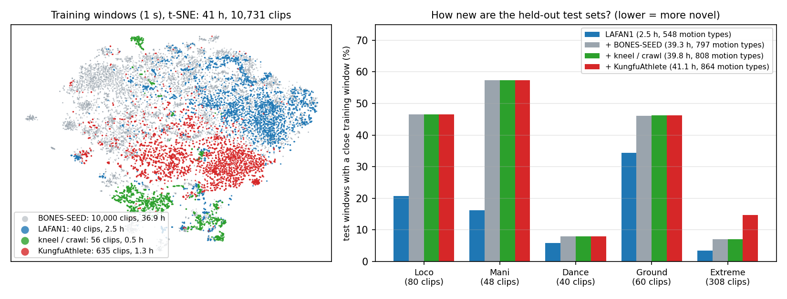
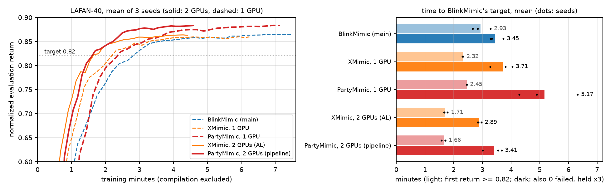

Results on held-out motions
Every method is trained on the same 10,731 clips: LAFAN1, a 10k diversity subset of BONES-SEED, 56 kneeling and
crawling clips of our own, and 635 KungFuAthlete clips. It is tested on five held-out sets: Loco (80 clips),
Mani (48), Dance (40) and Ground (60) from MotionDecode, a different motion-capture source, and Extreme (308):
KungFuAthlete martial arts, jumps and flips, held out by whole source video. RP1 uses the same motions retargeted to
RP1. PartyMimic comes with two reference encoders: an MLP (default) and a cross-attention encoder
(attention, --ref_enc xattn).
| Method | Training | Mean | Loco | Mani | Dance | Ground | Extreme |
|---|---|---|---|---|---|---|---|
| Unitree G1 · body position error (mm, lower is better), completion below | |||||||
| SONIC (NVIDIA GEAR, official) | 21,000 GPU-h | 58.4 | 28.7100% | 45.5100% | 48.799% | 80.386% | 88.788% |
| Mimic Lite v1.1 (official) | 50 GPU-h | 67.5 | 25.099% | 28.294% | 43.355% | 145.266% | 95.774% |
| SuperMimic (paper hyperparameters) | 52 min | 67.9 | 34.9100% | 34.3100% | 55.597% | 119.282% | 95.593% |
| NablaMimic (official config, 2 h) | 120 min | 59.9 | 32.999% | 30.3100% | 46.989% | 107.881% | 81.696% |
| BlinkMimic (main preset) | 59 min | 59.9 | 32.9100% | 30.9100% | 54.197% | 100.189% | 81.497% |
| XMimic (BlinkMimic main in JAX) | 50 min | 60.2 | 32.3100% | 30.6100% | 53.598% | 101.390% | 83.197% |
| PartyMimic, MLP (default) | 26 min | 45.1 | 25.7100% | 20.599% | 36.897% | 80.694% | 62.098% |
| PartyMimic, attention | 41 min | 43.5 | 25.1100% | 21.199% | 35.098% | 76.293% | 60.398% |
| RoboParty RP1 · body position error (mm, lower is better), completion below | |||||||
| SuperMimic (paper hyperparameters) | 149 min | 74.0 | 34.8100% | 29.1100% | 53.499% | 162.576% | 90.294% |
| BlinkMimic (main preset) | 68 min | 60.4 | 33.7100% | 27.3100% | 50.396% | 110.591% | 80.398% |
| XMimic (BlinkMimic main in JAX) | 59 min | 62.7 | 33.8100% | 29.1100% | 49.796% | 121.388% | 79.598% |
| PartyMimic, MLP (default) | 26 min | 47.8 | 23.4100% | 16.5100% | 35.396% | 105.188% | 58.999% |
| PartyMimic, attention | 42 min | 44.6 | 22.9100% | 16.1100% | 33.498% | 94.390% | 56.298% |
| PartyMimic, sparse keypoints, MLP | 29 min | 48.7 | 24.7100% | 19.1100% | 38.399% | 100.990% | 60.798% |
| PartyMimic, sparse keypoints, attention | 46 min | 47.8 | 24.1100% | 18.2100% | 36.897% | 100.090% | 60.198% |
Scored by the sim2real leaderboard MuJoCo sim2sim evaluator after ONNX export: every clip played from start to end, failure when the pelvis height error exceeds 0.3 m or the gravity direction error exceeds 0.8. Error is the local body position error over the tracked part of each clip; completion is the tracked share of each clip; Mean is the mean error of the five sets. All trained methods ran 12,000 iterations (NablaMimic: its 2-hour budget) with 2 seeds; the table gives the means. Training is the wall-clock time of 12,000 iterations on an otherwise idle RTX 4090 (i9-14900K). Our cards are 48 GB editions; the MLP fits the standard 24 GB card: with only 24.1 GB left free, G1 and RP1 runs kept the same speed and peaked at 22.6 and 23.4 GB.
Training data and how new the test sets are

We describe every 1-s window by heading-invariant root, joint and hand / foot kinematics, project to 32 dimensions and cluster the 41 h into 2,000 motion clusters. The library spans 864 distinct motion types (the exponential of the cluster entropy): LAFAN1 alone 548, BONES-SEED adds 249, kneeling / crawling 11 and KungfuAthlete, with only 1.3 h, 56. A test window counts as covered when a training window lies within the median distance between windows of different training sources. Only 47% of Loco, 57% of Mani, 8% of Dance, 46% of Ground and 15% of Extreme windows are covered: most test motion is new to every method. KungfuAthlete training clips raise the Extreme coverage from 7% to 15%.
MLP or attention
The attention encoder lets a causal Transformer over the observation history query the goal frames, so the
robot's own dynamics shape how it reads the reference. It lowers the G1 error on Ground by
4.4 mm and on Extreme by 1.7 mm, and the mean by
1.6 mm (RP1: 3.2 mm), at 1.6× the
training time. The MLP fits a 24 GB card; the attention encoder needs more memory, or --pi_batch 1024
on 24 GB (29 min on G1), which costs G1 2.7 mm on Ground and 2.1 mm on Extreme.
--pipeline splits training over two GPUs for 1.6–1.9× the speed.
| Encoder | G1 time | RP1 time | G1 mean error | RP1 mean error | GPU memory |
|---|---|---|---|---|---|
| MLP (default) | 26 min | 26 min | 45.1 mm | 47.8 mm | 22 GB peak: fits 24 GB |
| Attention | 41 min | 42 min | 43.5 mm | 44.6 mm | > 24 GB (or --pi_batch 1024) |
Sparse keypoints: one command for any body
With --interface sparse5 the command is six poses per frame: the pelvis pose, the head
orientation and the poses of both wrists and both ankles, 51 numbers and no joint angles. Any body with a pelvis,
a head, two hands and two feet can be written this way: a person in a motion-capture suit, a VR tracker set, a video
pose estimate, or another robot. The command does not depend on a robot's joint layout.
The same LAFAN1 motion as captured from a person and retargeted to Unitree G1 and RoboParty RP1, each written as the same six keypoint poses (spheres, with their orientation axes). The person's axes are aligned to G1's at the first frame.
Three additions let the policy follow such a command nearly as well as full joint references:
- The observation adds the robot's own keypoint errors, from forward kinematics of its joint encoders.
- A keypoint-to-joint network, fit to the motion library and frozen, estimates the reference pose for the
reference-action skip (
--kp_skip). - An auxiliary head predicts the reference joint angles from the policy's reference latent (
--kp_aux).
On RP1 the mean whole-body error over the five sets is 48.7 mm from keypoints against
47.8 mm from joint references with the MLP (47.8 vs 44.6 mm with attention),
below every baseline that sees the full joint reference (best: 60.4 mm). The keypoints themselves are
tracked within 2 mm
of joint references on Loco/Mani and Dance, with about half the error of the baselines. tools/export_deploy_onnx.py
exports the policy with a keypoint input (ref_kp) and a deployment YAML.
| Reference | Encoder | Loco/Mani | Dance | Ground | Extreme | Extreme, whole body |
|---|---|---|---|---|---|---|
| RoboParty RP1 · wrist and ankle position error (mm, relative to the own pelvis heading) | ||||||
| Joint | MLP | 22.5 | 41.9 | 118.3 | 85.4 | 58.999% |
| Sparse keypoints | MLP | 24.3 | 42.8 | 111.9 | 87.7 | 60.798% |
| Joint | attention | 22.1 | 39.4 | 101.1 | 81.0 | 56.298% |
| Sparse keypoints | attention | 22.4 | 39.9 | 110.2 | 86.2 | 60.198% |
| Joint | BlinkMimic | 40.0 | 71.8 | 126.6 | 120.4 | 80.398% |
| Joint | XMimic | 42.3 | 70.3 | 143.1 | 119.0 | 79.598% |
The RP1 sparse-keypoint policy (MLP, seed 0) in sim2sim. Only its command is drawn: the six target poses, placed in the robot's own pelvis heading frame as the policy reads them, and a red line from each of the robot's wrists and ankles to its target. Locomotion and Dance are the median clips of their sets; Extreme is the martial-arts clip of the videos below.
Sim2sim on held-out motions: zero-shot
Rollouts from the evaluator (MuJoCo, deterministic policy, default MLP encoder, seed 0). Loco, Mani, Dance and Ground show the clip with the median error of its set. Extreme shows two fast clips with clean references, chosen by us: a 12-second fist routine (faster than 63% of the Extreme clips; error 39 mm) and a jump (faster than 86%; 50 mm). The robot is solid, the reference a blue ghost, both at their global poses.
Why the fast Extreme clips are harder
The Extreme references are estimated from monocular video. We split the 308 clips into thirds by reference speed (95th percentile of the wrist and ankle speed) and measured every G1 rollout:
| G1, Extreme | Slowest third | Fastest third |
|---|---|---|
| Reference wrist / ankle speed | 0.8 m/s | 4.5 m/s |
| Body position error | 22 mm | 77 mm |
| Robot behind the reference | 20 ms | 40 ms |
| Reference foot sliding while on the ground | 0.06 m/s | 0.98 m/s |
| Largest gap between robot and reference root | 0.2 m | 1.1 m |
The robot is not late: it trails by one or two control steps, and shifting the reference by that much lowers the error by only 9%. Two other things grow with speed. In the fast clips the reference's feet slide over the ground at about 1 m/s while in contact, an artifact of the video estimate; the robot plants its feet, so its position drifts away from the reference and the ghost runs off. And the fastest swings exceed what the actuators deliver: the robot reaches 78% of the reference speed. Over all clips the error follows foot sliding (rank correlation 0.85) about as closely as speed (0.88). RP1 shows the same pattern (fastest third: 84% of the speed, 0.86 m/s sliding).
Speed on LAFAN: learned in 3–5 min
This comparison is on the LAFAN dataset (LAFAN-40: the 40 G1 LAFAN1 clips, used for both training and evaluation), XMimic's speed benchmark, not on the held-out test sets above. XMimic rebuilds BlinkMimic's main recipe in JAX and reports BlinkMimic's LAFAN-40 target in 0.91 min on four H100s. We ran its 1-GPU and 2-GPU (AL) trainers, BlinkMimic main and PartyMimic on our two RTX 4090s, under XMimic's protocol, 3 seeds each. PartyMimic keeps its recipe unchanged; it was not tuned for this benchmark. In the comparison above XMimic matches BlinkMimic (G1 mean error 60.2 vs 59.9 mm).

| Method | GPUs | it/s | First return ≥ 0.82 | Held ×3, 0 failed | Held ×3, with start-up | Return at 3,500 it |
|---|---|---|---|---|---|---|
| BlinkMimic (main) | 1 | 7.8 | 2.93 min | 3.45 min | 3.62 min | 0.865 |
| XMimic, 1 GPU | 1 | 9.3 | 2.32 min | 3.71 min | 3.96 min | 0.860 |
| PartyMimic, 1 GPU | 1 | 8.2 | 2.45 min | 5.17 min | 5.57 min | 0.883 |
| XMimic, 2 GPUs (actor | learner) | 2 | 13.2 | 1.71 min | 2.89 min | 3.17 min | 0.863 |
PartyMimic, 2 GPUs (--pipeline) | 2 | 12.7 | 1.66 min | 3.41 min | 3.82 min | 0.883 |
- Return 0.82. PartyMimic needs the fewest iterations (1,200–1,300; BlinkMimic 1,300–1,600; XMimic 1,400–1,500). On two GPUs it gets there as fast as XMimic (1.66 vs 1.71 min, 1.8× BlinkMimic). On one GPU XMimic's faster iterations make up for that (2.32 vs 2.45 min).
- Zero failures. PartyMimic is slower to the full target. One or two hard clips (
dance1_subject1,jumps1_subject2) keep failing, so zero failures held over three checkpoints comes at 2,100–3,100 iterations (XMimic 1,900–2,400, BlinkMimic 1,600–1,800). BlinkMimic and XMimic run evaluation-guided probe sweeps that search for exactly these failures among the training clips. PartyMimic dropped them because they did not improve held-out tracking (see the recipe). - Final quality. At the end of the 3,500-iteration budget PartyMimic's return is 0.883; the others reach 0.860–0.865.
- Where PartyMimic's speed comes from. On one GPU, the motion latents of all 32 imagined steps are computed in
one batched pass, and every Adam update (the critic's and the Adam half of Muon) runs on one flat buffer. Together these cut the policy update from 86.5 to
78.4 ms and raise training from 7.65 to 8.2 it/s. With
--pipeline, GPU 0 collects data and fits the world model while GPU 1 updates the policy and the critic on the previous iteration's data and world model, which gives 1.6× the 1-GPU throughput. The transfers between the GPUs run through pinned host memory on side streams and overlap the compute. The policy crosses as soon as its step is done, during the critic fit. Linear weights cross as bf16, which is exact because they only enter bf16 autocast matmuls. This matters here: the second 4090's PCIe link runs at x1 (about 1.6 GB/s measured), so a 36 MB fp32 policy alone would take over 20 ms to cross.
Protocol. LAFAN-40: the 40 G1 LAFAN1 clips, both for training and evaluation, with the same files
as XMimic (checked against its SHA-256 list). Every run trains 3,500 iterations with a checkpoint every 100. Each
checkpoint plays every clip once from its first frame per replica (4 replicas), without randomization or noise. A clip
fails when the training termination triggers. BlinkMimic and PartyMimic checkpoints are scored by BlinkMimic's
eval_batch.py, XMimic's by its JAX evaluator, which XMimic reports agrees with it to +0.001.
Training minutes exclude the first log interval's excess over the steady interval for every method, by XMimic's
tools/exclude_compile.py rule. That is compilation and CUDA-graph capture for the PyTorch trainers, and
the first-execution overhead left in XMimic's clock, since XMimic compiles before its clock starts. The
with-start-up column adds back each method's start-up with warm compilation caches (seeds 1 and 2): 0.17 min for
BlinkMimic, 0.26 / 0.28 min for XMimic (its ahead-of-time compilation), 0.41 min for PartyMimic. The very first run on
a machine compiles from scratch and takes longer: 3.3 / 2.0 min more for XMimic 1 GPU / AL, 1.9 min for the
PartyMimic pipeline. Hardware: two RTX 4090
(48 GB), i9-14900K. The two-GPU methods share the x1 link of the second GPU. XMimic AL runs its probe process on the
learner GPU under CUDA MPS, as in its README.
The PartyMimic recipe and what matters most
PartyMimic trains with BPTT: the policy gradient is the derivative of an analytic tracking reward through 32 imagined
steps of a learned world model, closed by the critic's value gradient ∇sV. The defaults of
python -m partymimic.train are this recipe. Effects are the change when a factor is removed (G1, held-out
Loc/Man error, ablations on the earlier 9,173-clip library).
| Factor | Setting | Effect when removed | Why |
|---|---|---|---|
| Muon optimizer | --pi_opt muon --wm_opt muon | +10.7 mm (Dance +25) | Orthogonalized updates keep the rare motions' nearly orthogonal gradients from being drowned by the majority. |
| Narrow reward kernels | --std_scale 0.35 | +6.5 mm (Dance +10.8) | BPTT follows the reward's slope, which vanishes at cm-level errors with the default widths. |
| Horizon 32 | --horizon 32 | 16 steps: +5.9 mm | Shorter chains lean on ∇sV, which is only loosely fit. |
| Reference-action skip | --pi_ref_skip | +5.6 mm | The network refines the next reference pose instead of rebuilding it. |
| Policy EMA | --pi_ema 0.995 | +3.4 mm | Single updates are noisy at this batch size; the average removes the noise. |
| Evaluator's collision model | --robot g1mj | LAFAN falls 14/40 vs 3/40 | The policy exploits whatever contacts the world model learned from the training simulator. |
| Value-gradient consistency | --v_gcons 0.5 | +1.0 mm | Fits ∇sV to the true return gradient already computed by the backward pass. |
| Diversity-balanced resets | --div_k 24 | Ground +6–19 mm | Resets spread over motion clusters instead of duration, so ground motions get 30% of them instead of 8%. |
| Self-imitation | --sil 1 | +0.5 mm early | Real better-than-V actions guide the policy while the world model and critic are still inaccurate. |
Why SuperMimic works: full-factor ablation
Stage 1 of the study ablated SuperMimic itself, factor by factor, on our reimplementation (LAFAN-40, G1, 6,000 iterations per variant, one variant per factor). The score is the normalized evaluation return (mean of the last two evaluations, deterministic policy). The baseline over 3 seeds is 0.686 ± 0.048, and single-seed |z| < 1.5 counts as noise. Δ is the change from the baseline.
All variants
| Variant | What it tests | Score | Δ | Verdict |
|---|---|---|---|---|
| Baseline (3 seeds) | ||||
base_s0 seed 0 | seed noise | 0.719 | +0.038 | |
base_s1 seed 1 | seed noise | 0.658 | -0.023 | |
base_s2 seed 2 | seed noise | 0.650 | -0.023 | |
| World model | ||||
k1 WM rollout loss window 8 → 1 | multi-step autoregressive vs one-step model loss | 0.656 | -0.017 | no clear effect |
k16 WM rollout loss window 8 → 16 | longer autoregressive window | 0.619 | -0.054 | worse (trend) |
wmworld invariant increments → raw world-frame state deltas | naive MBRL parameterization (no translation / yaw invariance) | 0.621 | -0.052 | worse (trend) |
noerrfloor no error floor in the WM loss | near-constant components dominating a std-normalized loss | 0.666 | -0.006 | no clear effect |
wm512 WM width 2048 → 512 | world-model capacity | 0.535 | -0.138 | worse |
wmonly0 WM-only warm-up 500 → 0 iterations | need for a model-only phase | 0.692 | +0.019 | no clear effect |
wmb2 WM batches per iteration 10 → 2 | amount of world-model fitting | 0.520 | -0.153 | worse |
wmb20 WM batches per iteration 10 → 20 | more world-model fitting | 0.721 | +0.048 | better (trend) |
wm4l WM 3 → 4 layers | more world-model capacity | 0.696 | +0.024 | no clear effect |
| Policy optimization | ||||
nocritic no critic bootstrap | role of the critic at H = 32 | 0.428 | -0.253 | worse |
h8 horizon 32 → 8 | short horizon (bias from the critic) | 0.430 | -0.250 | worse |
h64 horizon 32 → 64 | long horizon (gradient variance / explosion) | 0.661 | -0.012 | no clear effect |
noclip no gradient clipping | is clipping needed | 0.692 | +0.020 | no clear effect |
noclipv no element-wise 0.1 clip | does the element-wise clip act | 0.663 | -0.010 | no clear effect |
beta999 Adam β2 0.95 → 0.999 | second-moment adaptation speed | 0.708 | +0.035 | no clear effect |
out1 output-layer init 0.01 → 1 (3 seeds) | small init (initial action ≈ default pose) | 0.713 | +0.040 | better (trend) |
ln LayerNorm in the actor | does LN slow learning | 0.604 | -0.069 | worse (trend) |
floor4 input-normalizer floor 1e-2 → 1e-4 | normalizer floor | 0.670 | -0.003 | no clear effect |
survhard soft survival weight → hard termination | differentiable termination probability | 0.672 | -0.000 | no clear effect |
survnone no survival weight | role of the termination signal | 0.648 | -0.025 | no clear effect |
noimagnoise no sensor noise in imagination | noise as regularizer / deployment consistency | 0.674 | +0.002 | no clear effect |
nocerr critic without tracking-error inputs | critic features | 0.677 | +0.004 | no clear effect |
vclip critic output clipped to ±10 | community fix against value divergence | 0.703 | +0.031 | no clear effect |
lr1e4 lr 2e-4 → 1e-4 | learning rate | 0.591 | -0.081 | worse |
lr4e4 lr 2e-4 → 4e-4 (3 seeds) | learning rate (community choice) | 0.726 | +0.054 | better (trend) |
lr6e4 lr 2e-4 → 6e-4 (3 seeds) | learning rate | 0.750 | +0.077 | better |
ema policy EMA 0.995 (3 seeds) | weight averaging (community) | 0.761 | +0.089 | better |
lam0 critic target λ 0.95 → 0 | bias / variance of the critic target | 0.628 | -0.045 | worse (trend) |
lam1 critic target λ 0.95 → 1 | bias / variance of the critic target | 0.701 | +0.028 | no clear effect |
gamma097 discount γ 0.99 → 0.97 | effective horizon and value scale | 0.624 | -0.048 | worse (trend) |
cep1 critic epochs 5 → 1 | critic fitting strength | 0.652 | -0.021 | no clear effect |
h16 horizon 32 → 16 | horizon curve | 0.596 | -0.077 | worse |
h48 horizon 32 → 48 | longer gradient chain | 0.702 | +0.029 | no clear effect |
emalr6 EMA 0.995 + lr 6e-4 | EMA × higher learning rate | 0.825 | +0.153 | better |
emalr8 EMA 0.995 + lr 8e-4 | EMA × higher learning rate | 0.816 | +0.143 | better |
| Data and curriculum | ||||
noise0 action noise 0.1 → 0 | identifiability of ∂f/∂a | 0.692 | +0.020 | no clear effect |
noise03 action noise 0.1 → 0.3 | wider action coverage | 0.696 | +0.023 | no clear effect |
clean50 half the worlds collect without noise | covariate shift (community) | 0.707 | +0.034 | no clear effect |
uniform return-based reset sampling → uniform | adaptive curriculum | 0.657 | -0.016 | no clear effect |
noepcap no 500-step episode cap | episode length | 0.643 | -0.029 | no clear effect |
utd1 UTD 0.4 → 1.0 | less fresh data | 0.669 | -0.004 | no clear effect |
utd02 UTD 0.4 → 0.2 | more fresh data | 0.660 | -0.013 | no clear effect |
buf100 replay 1000 → 100 steps | freshness vs diversity | 0.656 | -0.016 | no clear effect |
| Observation interface | ||||
paperobs no reference-anchor relative orientation | paper observation (strongest community factor) | 0.484 | -0.188 | worse |
noselfcol self-collision off (3 seeds) | contact complexity (falls 33/40 on the leaderboard evaluator) | 0.739 | +0.067 | better |
vibed supermimic_vibed interface (3 seeds) | pelvis anchor + reference goal + relative obs + no self-collision | 0.749 | +0.076 | better |
| Gradient paths and mechanism | ||||
gwin8 H = 32, gradient cut every 8 steps | critic share vs gradient-chain length | 0.525 | -0.147 | worse |
onestep one-step model gradient only | multi-step Jacobian propagation | 0.002 | -0.670 | worse |
noobsgrad no gradient through the observation feedback | closed-loop (corrective) gradient | 0.517 | -0.156 | worse |
wmfreeze freeze the WM after 1000 iterations | on-policy refitting / model exploitation | 0.004 | -0.668 | worse |
noxi WM and critic without ξ | deterministic model conditioned on known randomness | 0.695 | +0.023 | no clear effect |
curstart imagine only from the 10 newest steps | diversity of the Dyna start states | 0.640 | -0.032 | no clear effect |
gwin1boot gradient cut every step, V at every step | long chain vs ∇V at the cut (SVG(1)-style) | 0.001 | -0.671 | worse |
gwin8boot gradient cut every 8 steps, V at the cuts | same, SHAC-style | 0.416 | -0.256 | worse |
vstopgrad no state gradient through the terminal V | does the policy use ∇V | 0.543 | -0.130 | worse |
wmfreeze4k freeze the WM after 4000 iterations | is refitting needed once the model is good | 0.507 | -0.166 | worse |
| Stage-2 additions | ||||
medclip per-sample action gradient ≤ 3 × median | heavy-tailed contact gradients (NablaMimic) | 0.613 | -0.060 | worse (trend) |
piup2 2 policy updates per iteration | updates vs wall-clock | 0.723 | +0.050 | better (trend) |
piup4 4 policy updates per iteration | updates vs wall-clock (2.2× slower per iteration) | 0.781 | +0.109 | better |
Conclusions: what dominates and why
- The multi-step gradient through an online-refit world model is the method.
Keeping only the one-step model gradient (
onestep,gwin1boot) gives a score of 0.00, and so does freezing the world model after 1,000 iterations (wmfreeze). With only one model step the policy follows the critic's ∇sV, which nothing supervises. A frozen model is exploited as soon as the policy leaves the region where it is accurate. - The horizon and the critic split the work. Without the critic (0.43), with H = 8 (0.43) or with
H = 16 (0.60), results are clearly worse, while H = 48 or 64 brings no gain. Short chains rely on the
inaccurate ∇sV; longer chains only add variance. The terminal ∇V still matters
(
vstopgrad0.54), but as a tail correction rather than the main signal. - The closed-loop observation path carries most of the useful gradient
(
noobsgrad0.52,gwin80.53). The gradient of how the next observation, and hence the next correction, depends on the state is what teaches feedback control. - Model error becomes gradient error. A smaller world model (
wm5120.54) or less model fitting (wmb20.52) hurts directly; more fitting (wmb20) helps only slightly. - The observation needs the reference relative to the robot (
paperobs0.48). Over long clips, yaw drift is otherwise unobservable. - Optimization knobs: policy EMA (+0.09, 3 seeds) and a 2–3× higher learning rate help, and
combined they give the best result (
emalr60.83). These carry over to PartyMimic. Everything else (λ, critic epochs, action noise, UTD, replay size, reset distribution, survival weighting) is within noise. - Caveat: turning off self-collision scores better here (+0.07, 3 seeds), but 33 of 40 LAFAN clips then fall on the leaderboard evaluator. Any factor that changes the simulator must be re-checked under the deployment evaluator. This is why PartyMimic trains on the evaluator's collision model.
Use it
Instructions for data, training, export and evaluation are in the README.
- Default (MLP):
bash scripts/train.sh logs/g1 --robot g1mj --motion_dir <npz clips> - Attention encoder: add
--ref_enc xattn(24 GB cards: also--pi_batch 1024). - Sparse keypoints: add
--interface sparse5; export withtools/export_deploy_onnx.py. - Two GPUs: add
--pipeline. Fine-tune on a few clips before deployment:--init <run>/last.pt.